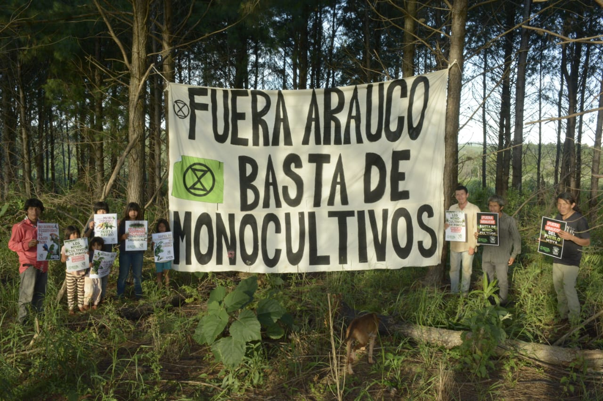
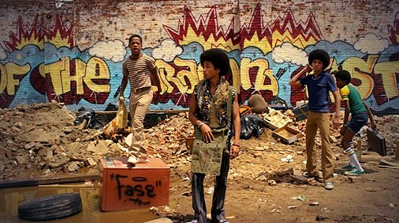
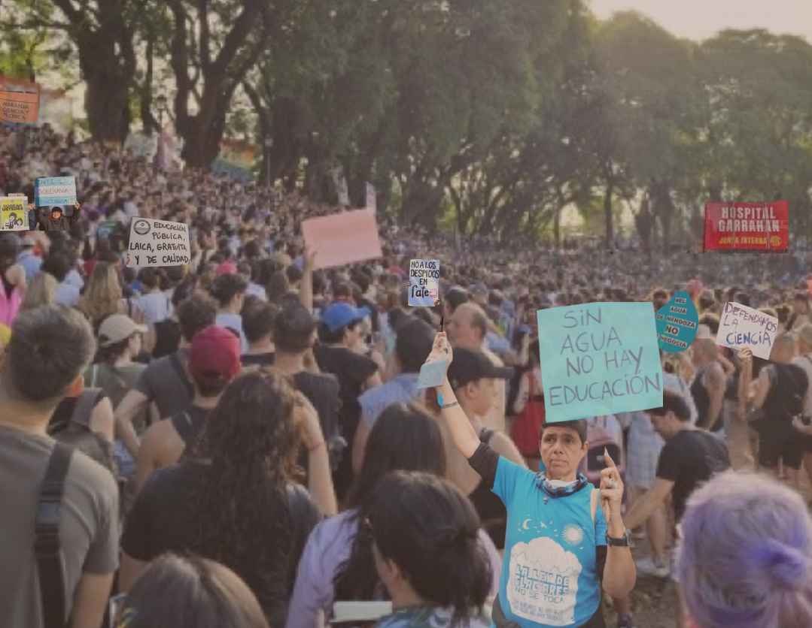

EDITORIAL HISTÓRICO
EDITORIAL
Manifiesto Universidades Mayo Francés de 1968
Las A.G. de los diversos establecimientos públicos de enseñanza superior que escribieron el manifiesto universitario del Mayo Francés. El mayo francés se configuró, no sólo como un mero estallido juvenil espontáneo, sino el detonante de una discusión estructural sobre la función social de la universidad. Las preguntas que hace 50 años atravesaron las aulas de Nanterre y luego las calles de París, y hoy resuenan con una actualidad inquietante.
ARTÍCULOS DE LA EDICIÓN MAYO 2026

ENTREVISTA
Arauco avanza, la selva resiste: entrevista
Desde la Gaceta Clara Zetkin dialogamos con Clarisa Neztor, activista socioambiental e integrante de Extinction Rebellion Misiones, y Santiago Ramos, mboruvixa (cacique) de la comunidad Mbya Guaraní de Puente Quemado II, en Garuhapé, Misiones. Denuncian el hostigamiento policial, las detenciones arbitrarias y el avance de la transnacional chilena Arauco, cuyos monocultivos de pino ya asfixian el 80% de su territorio ancestral. Una conversación sobre ecocidio, criminalización de la resistencia, el rol de la ciencia comprometida y las estrategias concretas de lucha.

ARTÍCULO
Asambleas de Chapadmalal: la política autónoma frente al avance inmobiliario-turístico
A partir del artículo de Mariangel Cacciutto: ¿pueden las asambleas vecinales sostener el antagonismo sin caer en el localismo? La experiencia de "Luna Roja" y "Bienes Comunes de Chapadmalal" muestra las potencialidades y tensiones de la contrademocracia en la defensa del territorio.
La productividad política que emerge del conflicto por la expansión inmobiliaria y turística en la zona se relaciona con la capacidad que han tenido las asambleas de Chapadmalal de ir construyendo y consolidando un sujeto político que encarna el antagonismo, al cuestionar el orden establecido y reproducido de gestión estatal-privada de los espacios públicos para su uso turístico-recreativo en esta zona costera del partido de General Pueyrredón.

RESEÑA
BAILAR ENTRE LAS RUINAS: Una reseña de The Get Down (2016)
Entre edificios incendiados, saqueos y block parties improvisadas, la serie propone una idea profundamente política y emocional: entre las ruinas pueden surgir formas colectivas de resistencia, deseo y esperanza. La belleza que aparece en The Get Down no está separada de esas fracturas materiales, sino que nace desde sus márgenes y contradicciones. El arte, la música y la fiesta no resuelven las condiciones que producen la devastación del Bronx, pero sí permiten, allí donde el sistema sólo parece producir exclusión y destrucción, disputar el aislamiento, reapropiarse del espacio urbano y construir experiencias compartidas capaces de reorganizar, aunque sea momentáneamente, la vida colectiva alrededor de algo distinto a la violencia y la ruina.

ARTÍCULO
¿La exacerbación de la fragmentación sectorial y territorial como estrategia política?
La construcción política global y la de nuestro país requiere ser revisada a fin de caminar hacia una verdadera transformación de nuestras condiciones de vida. O, dicho de otro modo, si seguimos así, son pocas las opciones que tendremos de vivir dignamente en este momento crítico del país y del mundo. Guillermo Folguera, militante socioambiental con más de dos décadas de trayectoria, analiza los límites de la fragmentación como táctica política dominante. Frente a la impotencia que produce la separación entre derechos humanos, laborales, ambientales y territoriales, propone construir puentes sin eliminar las identidades: una política de vida que integre desde los territorios.
RESEÑA
Las pasiones sindicales según Raymundo Gleyzer
“Basta hacer un recorrido por los barrios populares para observar la eficacia de un instrumento así. ¿Cuántas mujeres vemos en sus casas leyendo fotonovelas?, ¿y cuántos obreros las leen camino al trabajo?” Sobre esta premisa, abiertamente debatida dentro de una zona del cine militante, posicionado en la izquierda revolucionaria, el director Raymundo Gleyzer de quien se cumplieron cincuenta años en estos días de su desaparición forzada, concibió en 1972 “Los traidores”. Militante de PRT, un partido que proliferó a partir del golpe militar de 1966 y abruptamente menguó con los ensayos de terrorismo estatal para 1974, y del activismo audiovisual; creó su único largometraje de ficción, dentro de una filmografía en la que privilegió el testimonio directo mediante el empleo de los procedimientos documentales.
ARTÍCULO
Fundamentos Filosóficos Contra El Constructivismo Social
La filosofía va para adelante de forma positiva a pesar de los obstáculos que representa la búsqueda de la sabiduría. El sofista abandonó esa búsqueda porque le pareció innecesaria y una tarea titánica que no está dentro de las posibilidades humanas; nuestra sabiduría tiene límites, los límites de la razón. Como lo hicieron los sofistas, en la actualidad se instrumentaliza el conocimiento: el fin justifica los medios. La segunda década del siglo XXI vuelve a tomar fuerza en el mundo académico y social. Trayendo como consecuencias la negación y anulación del conocimiento, con una finalidad únicamente política de imponer la doxa por sobre la episteme .